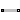
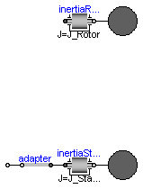
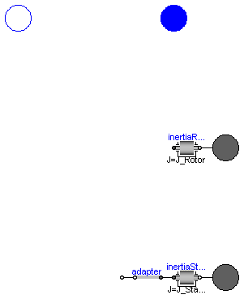

| Name | Description |
|---|---|
| Connector for Space Phasors | |
|  Adapter | From Modelica.Mechanics.Rotational.Interfaces.TwoFlangesAndBearingH |
| PartialBasicMachine | Partial model for all machines |
| PartialBasicInductionMachine | Partial model for induction machine |
| PartialBasicDCMachine | Partial model for DC machine |
 Modelica.Electrical.Machines.Interfaces.SpacePhasor
Modelica.Electrical.Machines.Interfaces.SpacePhasor
| Type | Name | Description |
|---|---|---|
| Voltage | v_[2] | [V] |
| flow Current | i_[2] | [A] |
connector SpacePhasor "Connector for Space Phasors" Modelica.SIunits.Voltage v_[2]; flow Modelica.SIunits.Current i_[2]; end SpacePhasor;
 Modelica.Electrical.Machines.Interfaces.Adapter
Modelica.Electrical.Machines.Interfaces.Adapter

| Type | Name | Default | Description |
|---|---|---|---|
| Boolean | bearingConnected | Choose wether bearing is connected |
| Type | Name | Description |
|---|---|---|
| Flange_a | flange_a | |
| Flange_b | flange_b |
model Adapter
"From Modelica.Mechanics.Rotational.Interfaces.TwoFlangesAndBearingH"
extends Modelica.Mechanics.Rotational.Interfaces.TwoFlanges;
parameter Boolean bearingConnected "Choose wether bearing is connected";
equation
flange_a.phi = flange_b.phi;
if bearingConnected then
0 = flange_a.tau + flange_b.tau;
else
0 = flange_a.phi;
end if;
end Adapter;

| Type | Name | Default | Description |
|---|---|---|---|
| Inertia | J_Rotor | rotor's moment of inertia [kg.m2] | |
| Inertia | J_Stator | J_Rotor | stator's moment of inertia [kg.m2] |
| Type | Name | Description |
|---|---|---|
| Flange_a | flange_a | |
| Flange_a | support | support at which the reaction torque is acting |
partial model PartialBasicMachine "Partial model for all machines"
parameter Modelica.SIunits.Inertia J_Rotor "rotor's moment of inertia";
parameter Modelica.SIunits.Inertia J_Stator=J_Rotor
"stator's moment of inertia";
output Modelica.SIunits.Angle phi_mechanical = flange_a.phi-support.phi
"mechanical angle of rotor against stator";
output Modelica.SIunits.AngularVelocity w_mechanical = der(phi_mechanical)
"mechanical angular velocity of rotor against stator";
output Modelica.SIunits.Conversions.NonSIunits.AngularVelocity_rpm
rpm_mechanical = Modelica.SIunits.Conversions.to_rpm(w_mechanical)
"mechanical speed of rotor against stator [rpm]";
output Modelica.SIunits.Torque tau_electrical = inertiaRotor.flange_a.tau
"electromagnetic torque";
output Modelica.SIunits.Torque tau_shaft = -flange_a.tau "shaft torque";
Modelica.Mechanics.Rotational.Interfaces.Flange_a flange_a;
Modelica.Mechanics.Rotational.Inertia inertiaRotor(final J=J_Rotor);
Modelica.Mechanics.Rotational.Interfaces.Flange_a support
"support at which the reaction torque is acting";
Modelica.Mechanics.Rotational.Inertia inertiaStator(final J=J_Stator);
protected
Machines.Interfaces.Adapter adapter(final bearingConnected=cardinality(support) > 1);
Modelica.Mechanics.Rotational.Interfaces.Flange_b internalSupport;
equation
connect(inertiaRotor.flange_b, flange_a);
connect(inertiaStator.flange_b, support);
connect(adapter.flange_a, inertiaStator.flange_a);
connect(adapter.flange_b, internalSupport);
end PartialBasicMachine;
 Modelica.Electrical.Machines.Interfaces.PartialBasicInductionMachine
Modelica.Electrical.Machines.Interfaces.PartialBasicInductionMachine
| Type | Name | Default | Description |
|---|---|---|---|
| Inertia | J_Rotor | 0.29 | rotor's moment of inertia [kg.m2] |
| Inertia | J_Stator | J_Rotor | stator's moment of inertia [kg.m2] |
| Integer | p | 2 | number of pole pairs (Integer) |
| Type | Name | Description |
|---|---|---|
| Flange_a | flange_a | |
| Flange_a | support | support at which the reaction torque is acting |
| PositivePlug | plug_sp | |
| NegativePlug | plug_sn |
partial model PartialBasicInductionMachine
"Partial model for induction machine"
extends PartialBasicMachine(J_Rotor=0.29);
constant Real pi=Modelica.Constants.pi;
constant Integer m=3 "number of phases";
parameter Integer p(min=1)=2 "number of pole pairs (Integer)";
output Modelica.SIunits.Voltage vs[m] = plug_sp.pin.v - plug_sn.pin.v
"stator instantaneous voltages";
output Modelica.SIunits.Current is[m] = plug_sp.pin.i
"stator instantaneous currents";
Modelica.Electrical.MultiPhase.Interfaces.PositivePlug plug_sp(final m=m);
Modelica.Electrical.MultiPhase.Interfaces.NegativePlug plug_sn(final m=m);
end PartialBasicInductionMachine;
| Type | Name | Default | Description |
|---|---|---|---|
| Inertia | J_Rotor | 0.15 | rotor's moment of inertia [kg.m2] |
| Inertia | J_Stator | J_Rotor | stator's moment of inertia [kg.m2] |
| Type | Name | Description |
|---|---|---|
| Flange_a | flange_a | |
| Flange_a | support | support at which the reaction torque is acting |
| PositivePin | pin_ap | |
| NegativePin | pin_an |
partial model PartialBasicDCMachine "Partial model for DC machine" extends PartialBasicMachine(J_Rotor=0.15); output Modelica.SIunits.Voltage va = pin_ap.v-pin_an.v "armature voltage"; output Modelica.SIunits.Current ia = pin_ap.i "armature current"; Modelica.Electrical.Analog.Interfaces.PositivePin pin_ap; Modelica.Electrical.Analog.Interfaces.NegativePin pin_an; end PartialBasicDCMachine;